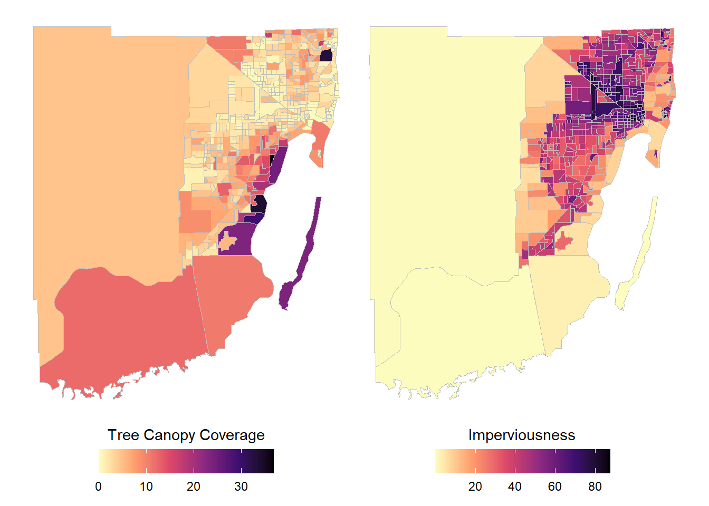
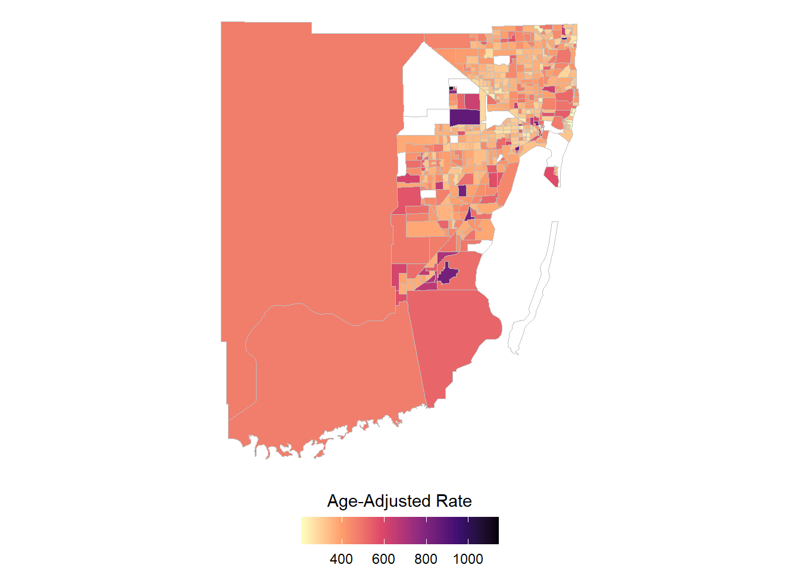
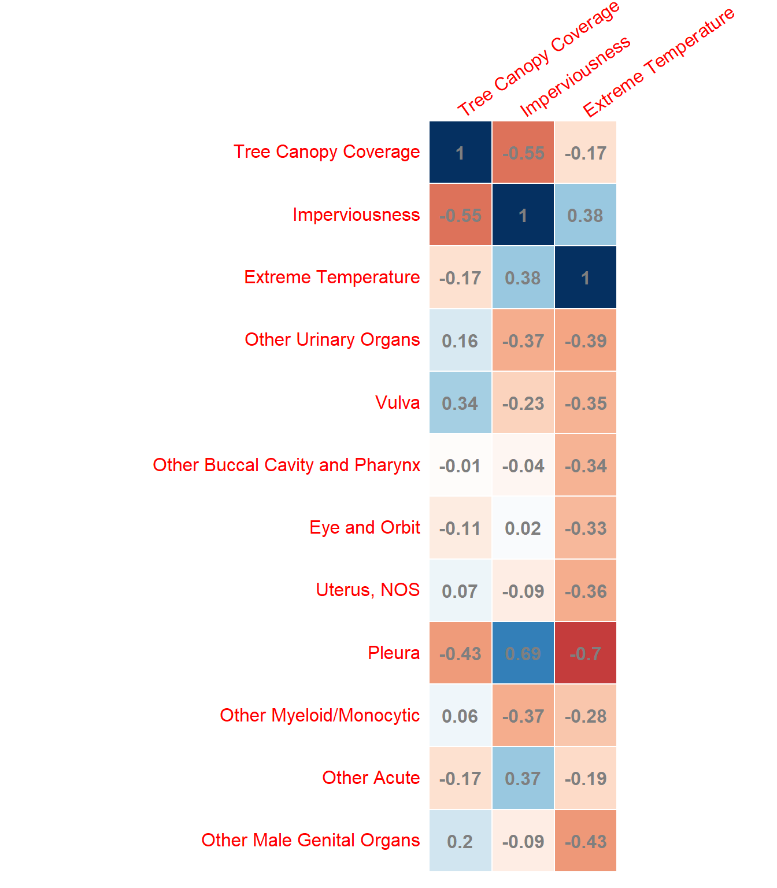

Introduction
The symptoms of certain types of health conditions (e.g., cardiovascular) can be exacerbated by climate change. Historically disinvested neighborhoods with large concentrations of low-income residents tend to have the highest surface temperatures. The inequitable distribution of impacts from extreme temperatures causes the most vulnerable populations to experience the most adverse health impacts. A primary example is the variance in tree cover that provides physical protection from the sun’s harmful ultraviolet (UV) rays. This study investigates the geographic, socio-economic disparities of extreme heat alongside cancer incidence in Miami-Dade County (MDC). Skin cancer incidence from the Florida Cancer Data System (FCDS) was overlaid with tree canopy and imperviousness raster data from the Multi-Resolution Land Characteristics (MRLC) consortium to represent extreme heat exposure. An increase in cancer incidence was spatially correlated with a decrease in tree canopy and an increase in imperviousness. We identify the need for increased tree canopy in low-income areas of MDC with low tree canopy coverage to mitigate the exposure to UV rays that cause skin cancer.
Methods & Data Sources
Climate / Environmental Data
Tree Canopy Coverage (2016) and Imperviousness (2019) data for the US is available from the National Land Cover Database (NLCD) as 30m raster images, hosted by MLRC. From the raster images we extract the average values for Tree Canopy Coverage and Imperviousness for Census Tracts in (South-)Florida. Extreme Heat data comes from the ISS ECOSTRESS satellite for the time range 2011-2020 and was prepared by the UM GIS Librarian Abraham Parrish.
Cancer Rates
Cancer rates are calculated based on cancer registry data obtained from the FCDS. The rates are calculated over the period from 2015 to 2019.
Results
- Canopy and Imperviousness are negatively correlated.
- Areas with high imperviousness tend to have low tree canopy coverage.
- Also, undeveloped naturally plain areas, like the Everglades, have low tree canopy AND low imperviousness.

- While there is no correlation to observe between the climate change indicators and cancer rates for all cancer types combined, cancers such as skin cancer, genital and urinary tract show some significant interactions.
- Skin cancer rates are slightly increased in areas where little tree canopy coverage exists.
- Vulva and urinary organs are also increased when less coverage.
- Imperviousness and extreme heat seem to have a negative impact on several types of cancer.
- What we observe he can most likely be explained by
- young age of people living in areas with high temperatures/imperviousness
- ~high temperatures are actually so hot that humans seek protection from it
- What we observe he can most likely be explained by


Limitations
Temperature
- surface temperature different from experienced
- housing and ac can provide mitigation
Next Steps
- Include SDOH
- Can we show that race an amplifier for the negative effects of climate change, in South-Florida.
- Extend analysis to all catchment area counties and all of Florida.
- For modelling all of US would make most sense.